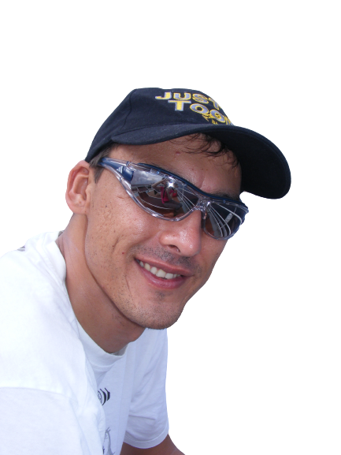

ABOUT ME
As a Senior Engineer, my primary focus is leveraging Node.js, TypeScript, and React to design and scale open-source cloud applications and distributed microservices. I bring extensive experience in monolithic system decomposition, distributed architecture patterns, and relational database modeling.
I am highly passionate about combining modern open-source stacks with intelligent systems—including engineering AI agents and implementing advanced Azure AI cloud solutions—to build performant, sustainable architectures that solve complex business and operational challenges.
WORKING EXPERIENCE
Senior Engineer
Nintex | Global | 2019-Current- Designed and developed multiple Micro Front End (MFE) applications to break down a legacy enterprise monolith into decoupled, scalable open-source domain structures.
- Engineered production AI automation capabilities using Node.js and cloud infrastructure, including one of the platform's first AI process-generation tools and a complex AI Agent designer.
- Maintained core parts of the Promapp system, building optimized backend handlers and rapidly building high-performing Proof-of-Concepts (POCs) to explore next-generation optimizations.
- Provide technical leadership, test automation direction, and structured mentorship to engineering staff to elevate team capabilities and output.
Core Stack: Node.js, TypeScript, React.js, REST APIs, GitHub, Azure DevOps, C#
C# Developer
Absolute Systems | Johannesburg, Bryanston | 2017 - 2019- Designed and implemented clean web applications utilizing Angular 4 and RESTful APIs backed by robust services.
- Refactored and decoupled legacy internal business systems to improve processing logic and application performance.
- Integrated newly provisioned peripheral devices into existing communication layers to expand infrastructural compatibility.
Core Stack: REST APIs, Angular 4, C#
C# Developer
Clientele Life | Johannesburg, Rivonia | 2012 - 2017- Maintained and enhanced a complex, custom-engineered Policy Creation system designed and built from the ground up.
- Optimized system interactions and data accuracy for high-volume automated processing using OCR technology (ABBYY).
- Maintained and refactored underlying database layers through Entity Framework to optimize data integrity and retrieval pipelines.
Core Stack: REST APIs, AngularJS, Entity Framework, SQL Server
FEATURED PROJECTS & CONTRIBUTIONS
A selection of open-source contributions and ecosystem initiatives demonstrating a deep passion for modern JavaScript/TypeScript architectures and software engineering automation.
Open Source Contribution: Carettab
View on GitHubActive code contributions to a widely adopted, highly customizable browser-extension dashboard built entirely inside the open-source JavaScript ecosystem.
Open Source Contribution: planfree.dev
View on GitHubContributed to an open-source development planning tool built to optimize agile scoping workflows for engineering teams.
Open Source Contribution: WiFi Manager (ESP)
View on GitHubContributed to a major embedded automation utility library, working with lightweight network setups and edge routines.
AI & Edge Proof-of-Concepts
Personal Research & Development- Developed high-concurrency event handling and local orchestration solutions leveraging Node.js and hardware integrations.
- Consistently build proof-of-concept AI agent services to evaluate state-of-the-art developments in automated problem-solving patterns.
PROFESSIONAL QUALIFICATIONS
 Azure AI Engineer Associate (AI-102)
Azure AI Engineer Associate (AI-102)
EDUCATION
International Diploma in Information Systems (Engineering)
CTI | Bedfordview | 2005
- Relational Database Modelling & Design
- SQL Server 2000, VB6
- Program Design Fundamentals
Senior Certificate
Hoërskool Oosterlig | Boksburg | 2003
- Main subjects: Mathematics, Physical Science, Computer Literacy fundamentals.